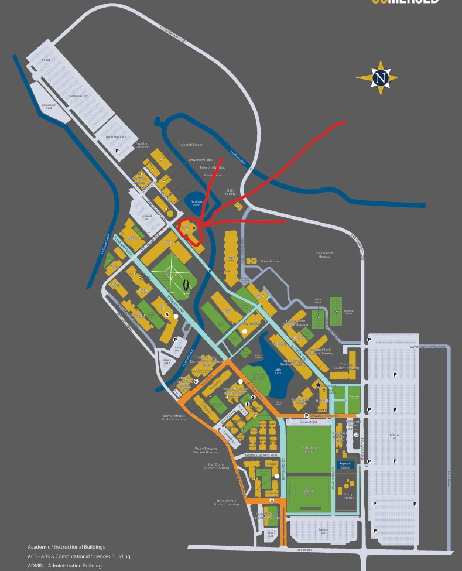

The Science and Engineering Building 2 (SE2) is home to advanced laboratories, research facilities, and classrooms dedicated to science, engineering, and technology. It plays a critical role in supporting the academic and research needs of UC Merced students and faculty.


You want to go here